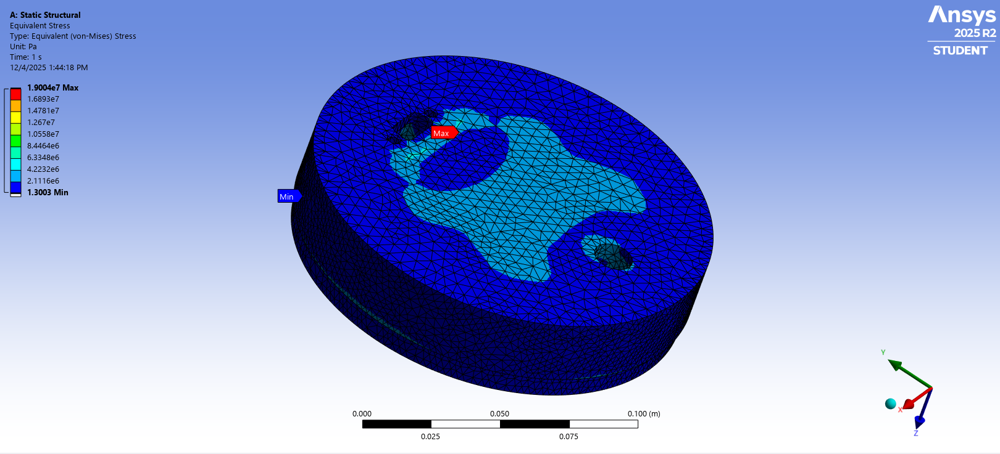
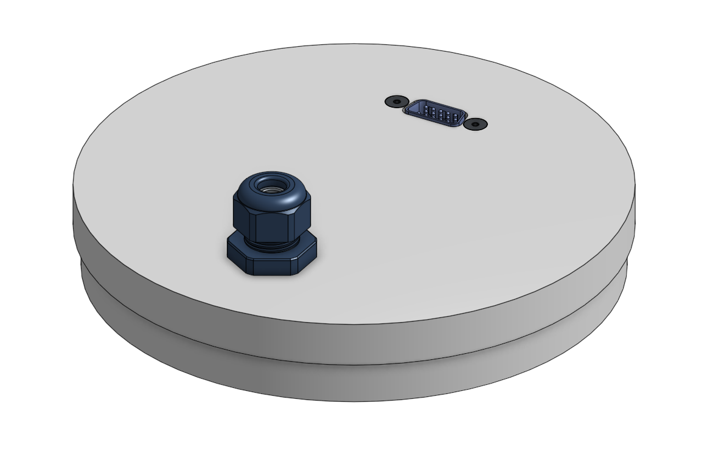

Design Process
From separation problem to mechanical interface
01
System Requirements & Constraints
Defined system-level requirements including expected CO₂ pressure range, shear pin failure loads, allowable volume, and integration constraints with avionics and recovery subsystems. The target pressure bounds were estimated between 21.5 psi and 180 psi, representing the pressure required to break the main coupler shear pins and the maximum achievable pressure in the reduced volume.
02
Blast Disk Geometry
Designed a sliding disk geometry with a lip and shoulder interface. The lip seats on top of the main parachute coupler tube while the shoulder sits inside it, allowing pressure from the CO₂ Raptors to push the disk into the coupler and shear the retention pins during separation.
03
Pass-Through Integration
Incorporated two required pass-throughs: a shock cord routed through a submersible cable gland and avionics wiring routed through a breakaway VGA connector. Both interfaces had to preserve pressure sealing while avoiding interference with the separation event.
04
Material Selection & FEA
Selected HDPE for its low-friction sliding behavior against the avionics body tube and sufficient yield strength under expected pressure loads. FEA was performed at a 60 psi pressure load with a 1-inch disk length, excluding the shoulder, resulting in a factor of safety of 1.95.
05
Manufacturing & Test Planning
Planned fabrication from a 6-inch OD, 3-inch long HDPE disk. The outer diameter is turned to 5.947 inches, with a 0.5-inch shoulder turned to 5.8 inches. A miniature separation test with pressure instrumentation was planned to experimentally determine maximum pressure and refine final disk length.

Figure 1 — Blast disk assembly showing HDPE disk, shoulder interface, VGA connector, and shock cord cable gland

Figure 2 — FEA stress results under 60 psi pressure loading

Figure 3 — HDPE blast disk prototype after machining and interface installation
Figure 4 — Fusion 360 toolpath showing machining strategy for blast disk geometry